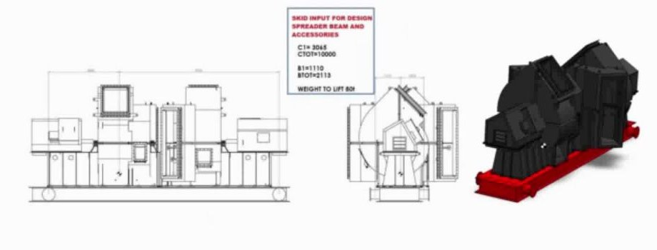
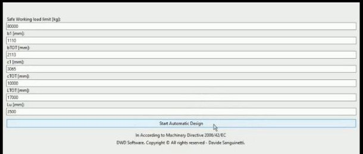
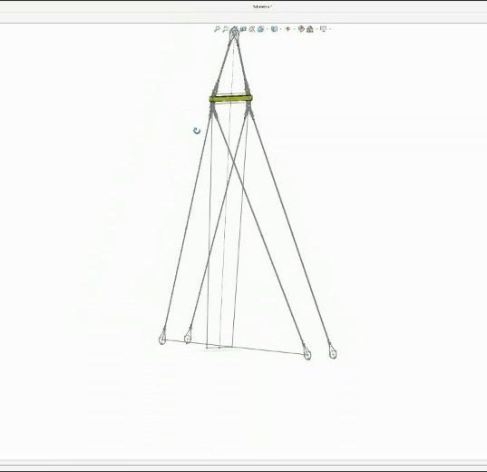

DWD · Draw Without Drawing
Dai parametri al modello 3D, in automatico
From parameters to 3D model, automatically
Inserisci i dati principali del progetto. DWD dimensiona la struttura e gli accessori, aggiorna il modello SOLIDWORKS e prepara la distinta dei materiali con i costi.
Enter the main design data. DWD sizes the structure and accessories, updates the SOLIDWORKS model and prepares the bill of materials with costs.
DWD in azione
DWD in action
Dimostrazione: progettazione automatica di un bilancino per il sollevamento di uno skid.
Demo: automatic design of a spreader beam for lifting a skid.
Esempio: bilancino per il sollevamento di uno skid
Example: spreader beam for lifting a skid
Un caso reale: progettare il bilancino e gli accessori per sollevare un macchinario montato su skid.
A real case: designing the spreader beam and lifting accessories for a skid-mounted machine.
I dati di partenza
The starting data
Le dimensioni principali dello skid e il peso da sollevare.
The main dimensions of the skid and the weight to be lifted.

Pochi parametri, un clic
A few parameters, one click
Si inseriscono carico di lavoro e quote, poi si avvia la progettazione automatica. Il dimensionamento segue la Direttiva Macchine 2006/42/CE.
Enter the working load and dimensions, then start the automatic design. Sizing follows the Machinery Directive 2006/42/EC.

Modello 3D e distinta
3D model and bill of materials
DWD dimensiona struttura e accessori, aggiorna il modello in SOLIDWORKS e produce la distinta dei materiali con i costi.
DWD sizes the structure and accessories, updates the model in SOLIDWORKS and produces the bill of materials with costs.

Cosa ci guadagni
What you gain
Ore risparmiate
Hours saved
Le varianti di un prodotto si ottengono in minuti, senza ridisegnare il modello.
Product variants take minutes, without redrawing the model.
Meno errori
Fewer errors
Le regole di progetto sono scritte una volta e applicate sempre allo stesso modo.
Design rules are written once and always applied the same way.
Costi subito
Costs right away
La distinta con i costi è pronta insieme al modello: utile già in fase di offerta.
The costed bill of materials is ready with the model, which helps at quotation stage.
DWD si adatta a qualsiasi prodotto legato a modelli 3D: strutture in acciaio o legno, macchinari industriali, componenti per la stampa 3D.
DWD adapts to any product built on 3D models: steel or timber structures, industrial machinery, 3D-printed parts.
Verso l'integrazione completa
Towards full integration
-
OggiToday
Funzionante
Working
DWD calcola il progetto e comanda SOLIDWORKS tramite tabelle dati in Excel.
DWD calculates the design and drives SOLIDWORKS through Excel-based design tables.
-
Prossimo passoNext
Un'unica applicazione
One integrated application
Tutti i dati si inseriscono in un'unica interfaccia. All'avvio DWD li passa direttamente a SOLIDWORKS, che ricostruisce il modello 3D e genera la distinta.
All inputs are entered in a single interface. At start, DWD passes them directly to SOLIDWORKS, which rebuilds the 3D model and generates the bill of materials.
Hai un prodotto con molte varianti?
Do you have a product with many variants?
Raccontami come lo progetti oggi: vediamo insieme se DWD può automatizzarlo.
Tell me how you design it today, and we'll see together whether DWD can automate it.